Barco de refugiados sírios na Ilha de Lesbos, na Grécia, em outubro de 2015.
Nicolas Economou/Shutterstock.com
Os movimentos populacionais ocorrem constantemente na história da humanidade. Desde que o Homo sapiens surgiu na África, há centenas de milhares de anos, deslocar-se em busca de sobrevivência, melhores condições de vida ou, simplesmente, pela atração do novo e do desconhecido é uma prática que por muito tempo foi realizada apenas com as forças do corpo humano e dos animais.
O desenvolvimento social, dos meios de transporte e de comunicação intensificou e acelerou esses fluxos populacionais. Esses movimentos geraram mudanças econômicas, culturais e políticas nos últimos dois séculos. O processo de globalização possibilitou o ápice dos movimentos migratórios, trazendo novos conflitos e novos desafios a serem enfrentados tanto por governos nacionais como por organizações internacionais.
- Quais são os principais motivos que levam as pessoas a migrar nos dias atuais?
- Quais conflitos e desafios o intenso fluxo migratório pode gerar nos países de destino dessas pessoas?
Neste capítulo serão abordadas as habilidades EM13CHS201, EM13CHS202, EM13CHS401, EM13CHS503.
Migrações
Definimos como migração todos os movimentos populacionais que ocorrem no espaço geográfico. Como ponto de partida, vamos utilizar três formas básicas para nos referir a tais movimentos: migração, imigração e emigração. O termo migração é usado para fazer referência tanto à chegada como à saída de pessoas de um lugar. Imigração, por sua vez, significa a chegada; assim, quem chega a um lugar é chamado de imigrante. Já emigração significa a saída, sendo então o emigrante quem saiu de um determinado lugar.
As migrações podem ser internas (ocorrem dentro do território de um país) ou externas (ocorrem de um país para outro). Podendo, ainda, ser divididas em intrarregionais (dentro da mesma região), inter-regionais (entre duas regiões) ou, ainda, entre campo-cidade (êxodo rural), cidade-cidade e intrametropolitanas (de uma cidade para outra dentro de uma mesma região metropolitana).
Quanto à duração, as migrações podem ser divididas em permanentes e temporárias. As permanentes se referem aos migrantes que não pretendem, a priori, voltar para sua cidade ou país de origem. Quando os migrantes já têm planos de retornar à região ou local de origem após determinado período, geralmente já preestabelecido, ocorrem as migrações temporárias. Em geral, essas migrações são internas, ou nacionais, como a transumância e a pendular.
Na transumância, ou migração sazonal, os migrantes se deslocam de uma região ou cidade para outra durante uma determinada época do ano, em geral marcada por uma estação. Dois casos em que isso ocorre são as migrações de pessoas que trabalham em colheitas, como a de cana-de-açúcar, e daquelas que trabalham em cidades turísticas durante os períodos de temporada de férias.
A migração pendular é aquela na qual os migrantes vão e voltam no mesmo dia, deslocando-se do local de moradia para o de trabalho. Esse tipo de deslocamento, também chamado de migração diária, costuma se encaixar dentro das migrações intrametropolitanas.
Causas das migrações
Outro aspecto importante acerca das migrações é procurar definir suas causas. Nesse sentido, vale destacar que o processo de globalização vem promovendo o aumento dos fluxos populacionais. Isso se dá porque o desenvolvimento dos meios de transporte e de comunicação facilitou o deslocamento de pessoas no espaço.
Em sua grande maioria, as migrações ocorrem das regiões de repulsão (ou expulsão) populacional para as de atração (ou recepção). Nesse caso, podemos observar padrões de lugares de saída e de chegada, que nos levam a entender as causas das migrações. No entanto, esses padrões podem mudar ao longo do tempo. Vários são os motivos que podem levar uma região a se tornar uma área de repulsão populacional. Há eventos mais graves, como grandes desastres naturais, guerras ou o estabelecimento de governos autoritários e que promovem a perseguição a determinados grupos. Nesses casos, costumamos dizer que se trata de migrações forçadas.
Observatório de migrações forçadas.
Segundo a organização independente Instituto Igarapé, mais de 7 milhões de brasileiros foram forçados a se deslocar entre 2000 e 2018. Para facilitar a visualização dos principais casos, o Instituto fez um mapa interativo.
Disponível em: http://p.p4ed.com/UOJOY. Acesso em: 5 ago. 2021.
Outro fator que frequentemente impulsiona os fluxos migratórios é a questão econômica. A busca de melhores oportunidades de emprego e renda, assim como de melhores condições de moradia, acesso à saúde e à educação dos filhos, é considerada a motivação mais comum para as migrações espontâneas. Muitas migrações internas do Brasil seguem esse padrão. Na década de 1970, por exemplo, houve a busca de gaúchos por propriedades rurais extensas e relativamente baratas no Centro-Oeste para o plantio de cereais como soja e milho. Outro exemplo de migrações espontâneas é aquela conhecida como fuga de cérebros, ou fuga de capital humano. Nesse caso, profissionais altamente qualificados ou estudantes de destaque, que não encontram as oportunidades de trabalho que esperavam em seu país de origem, se deslocam para países ou regiões mais desenvolvidas em busca de tais oportunidades.
Em muitas situações não é tão fácil fazer a classificação. Há processos de crise econômica e política, que podem tomar conta de um país ou região por anos, o que gera processos de migrações espontâneas e, em caso extremo, forçadas.
Migrações no Brasil
Como vimos no capítulo anterior, a formação da população brasileira teve grande contribuição dos fluxos migratórios, principalmente de portugueses e africanos, mas também de italianos, japoneses, alemães e muitos outros povos que chegaram aqui até meados do século XX. Agora, veremos os principais movimentos dos grupos humanos que ocorrem dentro do território nacional e a atual situação do país nos fluxos internacionais.
Migrações internas e distribuição espacial da população
As migrações internas podem ocorrer de diversas formas, como no caso do êxodo rural, da transumância e das migrações pendulares. Neste momento, vamos tratar de forma mais detalhada das migrações inter-regionais, que foram muito importantes no processo de redistribuição da população brasileira ao longo das últimas décadas, principalmente após os anos 1950.
A ocupação territorial promovida no contexto da colonização contribuiu para a forte concentração da população brasileira nas proximidades do litoral, mantendo baixa densidade demográfica nas áreas interiores.
A densidade demográfica expressa a concentração de pessoas em relação à área, sendo medida em habitantes por km².
e acordo com tal índice, as regiões são classificadas em muito povoadas e pouco povoadas. Países com alta densidade demográfica podem atingir índices acima de centenas de pessoas por km², enquanto no Brasil a média é de 20. Portanto, em termos gerais, podemos dizer que o Brasil é pouco povoado.
Ao analisarmos a distribuição da população no território brasileiro, podemos concluir que há fortes concentrações, pois a densidade demográfica de alguns estados é de centenas de habitantes por km², como é o caso do Rio de Janeiro e de São Paulo. Ao mesmo tempo, outras unidades da federação não chegam a apresentar 5 hab./km², como é o caso do Amazonas, do Mato Grosso e de Roraima. Essa distribuição populacional foi influenciada pela colonização e por processos de migrações internas.
Brasil: densidade demográfica – 2010
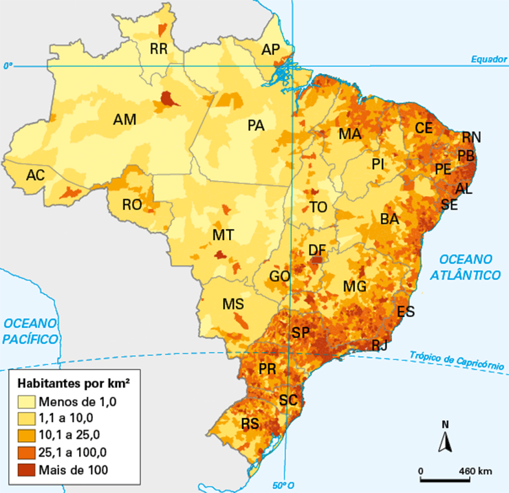Fonte: IBGE. Densidade Demográfica, 2010. Disponível em: https://atlasescolar.ibge.gov.br/images/atlas/mapas_brasil/brasil_densidade_demografica.pdf. Acesso em: 5 ago. 2021.
Assim como no caso das migrações internacionais, os deslocamentos inter-regionais ocorrem de áreas de repulsão para áreas de atração populacional. Como as oportunidades econômicas constituem a principal motivação para os deslocamentos internos no Brasil, as condições de atração ou de repulsão populacional se alteraram conforme o crescimento ou declínio dos ciclos econômicos regionais.
Entre o início da colonização, no século XVI, e meados do XVIII, a economia brasileira era bastante concentrada no Nordeste, principalmente em sua zona da mata, onde era cultivada a cana-de-açúcar. Mais tarde, com mudanças na economia do país, a busca por ouro no século XVIII, em Minas Gerais, e a extração de látex de seringueira na Amazônia, no final do século XIX, atraíram nordestinos em busca de trabalho e enriquecimento.
Teatro Amazonas, localizado em Manaus, centro econômico que atraiu migrantes de outras partes do Brasil no final do século XIX.
filipefrazao/iStockphoto.com
Um país povoado é aquele que apresenta alta densidade demográfica, seja sua população grande ou não. Países com grandes populações podem apresentar alto ou baixo índice de povoamento, como acontece com a China, com seus mais de 1,4 bilhão de habitantes, que, mesmo sendo o país mais populoso do mundo, tem cerca de 153 hab/km², ficando atrás de países como Alemanha, Reino Unido e Índia.
Em um outro extremo, a Austrália é um país com grande extensão territorial, mas muito pouco povoado e também pouco populoso, com cerca de 25 milhões de pessoas e densidade demográfica de aproximadamente 3,3 hab/km².
Por muito tempo, as economias agrícolas ou extrativistas e a precariedade dos meios de transporte desestimulavam o deslocamento de pessoas entre as regiões do país, caracterizando a organização territorial em arquipélago, ou seja, a existência de ocupações regionais pouco interligadas entre si, como se fossem ilhas de economias agroexportadoras, relacionadas, principalmente, aos países desenvolvidos.
Essa situação começou a mudar a partir dos anos 1930, que marcaram a crise das economias agroexportadoras que mantinham as regiões brasileiras mais ligadas com o exterior do que umas com as outras. Por um lado, essa crise aumentou as diferenças de oportunidades econômicas entre as regiões; por exemplo, enquanto o Nordeste entrou em decadência, o Sudeste conseguiu substituir parte da economia agroexportadora pela urbano-industrial.
Por outro lado, justamente essa industrialização, iniciada no Sudeste, levou à modernização dos meios de transporte e comunicação no país, promovendo a integração do território nacional através da construção de um novo meio técnico. A construção de Brasília e de rodovias ligando a nova capital a todas as regiões do país é um exemplo desse processo. Observe, nos mapas a seguir, como o país passou, aos poucos, da organização em arquipélago até a integração nacional.
Brasil: integração do território – 1890-1980
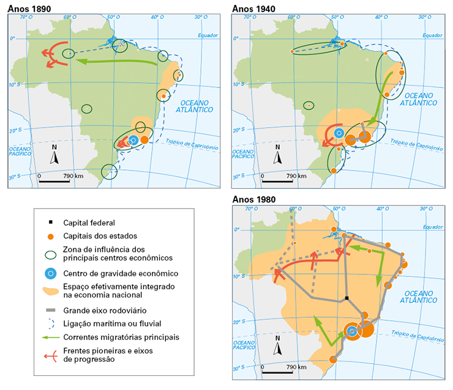Fonte: NASCIMENTO JÚNIOR, João de Deus Barbosa. “O plano econômico de desenvolvimento sustentável – zoneamento econômico ecológico da área de abrangência da rodovia BR-163 e a segurança alimentar da população do norte do estado do Mato Grosso – uma questão esquecida?”. EcoDebate, 14 out. 2013. Disponível em: www.ecodebate.com.br/2013/10/14/o-plano-de-desenvolvimento-sustentavel-zoneamento-economico-ecologico-da-area-de-abrangencia-da-rodovia-br-163-e-a-seguranca-alimentar-dapopulacao-do-norte-do-estado-do-mato-grosso-uma-questao-es/. Acesso em: 5 ago. 2021.
Com essas mudanças, novos e importantes fluxos migratórios foram surgindo no país. Os principais são:
- do Nordeste para o Sudeste: desde a década de 1930 esse fluxo populacional começou a ganhar destaque, mas sua intensificação se deu a partir dos anos 1950, quando a industrialização e a urbanização dos estados de São Paulo, Rio de Janeiro e Minas Gerais aumentaram a necessidade de mão de obra tanto nas fábricas como na indústria da construção civil. Apesar de menos significativo, esse fluxo ainda continua existindo.
- do Nordeste para Brasília: a construção da nova capital teve início em 1956, com a ascensão de Juscelino Kubitschek ao poder. A cidade foi inaugurada em 1960, mas muitas obras continuaram a ser realizadas por anos, exigindo grande contingente de trabalhadores.
- do Nordeste para o Norte: grandes obras governamentais, exploração madeireira, mineração e o crescimento das cidades de Manaus e Belém, entre outras, estimularam esse fluxo.
- do Sul para o Centro-Oeste e o Norte: a modernização agrícola e o escasseamento de terras na região Sul levaram muitos gaúchos, catarinenses e paranaenses a buscar terras baratas e empregos na agricultura em estados como Mato Grosso do Sul, Mato Grosso, Rondônia, Amazonas e Pará. Esse fluxo se intensificou a partir de meados dos anos 1970 devido à expansão da fronteira agrícola.
No início dos anos 1990, a desconcentração das atividades econômicas no país aumentou, o que levou a uma mudança nas migrações, que passaram a ser marcadas por deslocamentos intrarregionais e pelo crescimento das migrações de retorno.
O primeiro caso demonstra que o desequilíbrio econômico entre as regiões – que tornava algumas delas áreas de repulsão populacional e outras, áreas de atração – começou a diminuir, levando muita gente a buscar empregos e oportunidades de melhoria de vida dentro de suas regiões.
As migrações de retorno, por sua vez, demonstram um processo chamado reversão migratória, caracterizada pelo retorno das pessoas a sua região de origem. A onda mais recente de reversão migratória foi de pessoas voltando do Sudeste para o Nordeste, de onde elas ou seus pais e avós tinham saído. Esse movimento se deveu a dois motivos principais: a melhoria das condições de vida no Nordeste em virtude de obras, expansão industrial e programas sociais, e o processo de desindustrialização e de estagnação econômica de grandes cidades do Sudeste. Observe a tabela a seguir.
Imigração e emigração no Brasil contemporâneo
Até a década de 1950, o Brasil era claramente uma área de atração populacional, o que se devia tanto ao processo de ocupação e desenvolvimento do território nacional quanto a problemas nas áreas das quais os imigrantes saíam, com destaque para a Europa, a China e o Japão.
O contexto geopolítico e econômico mundial entre 1960 e 1980 diminuiu bastante o fluxo migratório entre o Brasil e esses países, principalmente porque a Europa e o Japão viviam momentos de forte crescimento econômico estimulado pela reconstrução do pós-guerra. A partir de 1980, essas regiões e os Estados Unidos passaram a ser áreas de forte atração populacional. Um dos motivos para isso é o fato de suas economias serem dinâmicas e geradoras de empregos e outras oportunidades econômicas.
Por outro lado, países subdesenvolvidos, com destaque para os latino-americanos, enfrentaram crises econômicas, principalmente a partir de 1980, e tornaram-se áreas de repulsão populacional. No Brasil, por exemplo, o fluxo de migrações se inverteu, e a emigração passou a ser maior do que imigração. Os principais destinos foram Estados Unidos, Paraguai, Japão e Europa.
Segundo estimativas do governo brasileiro para 2015, havia cerca de 1,4 milhão emigrantes brasileiros nos Estados Unidos. Mas dados da Organização para a Cooperação e Desenvolvimento Econômico (OCDE) indicam que os brasileiros oficialmente reconhecidos como imigrantes no país não chegam a 300 mil e a maioria vive em situação de irregularidade.
Mundo: brasileiros vivendo no exterior – 2015
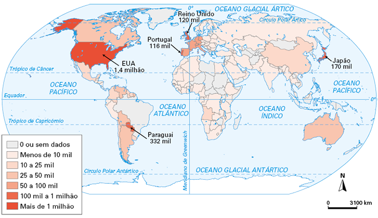Fonte: Nexo Jornal. https://www.nexojornal.com.br/grafico/2018/02/16/Em-que-países-vivem-os-brasileiros-no-exterior-segundo-o-Itamaraty. Acesso em: 5 ago. 2021.
O caso japonês é diferente. O desenvolvimento econômico local e o declínio do crescimento populacional do país elevaram a necessidade de mão de obra, levando o governo japonês a criar programas de imigração para descendentes de japoneses.
A situação dos brasileiros nos países vizinhos também é majoritariamente regular, pois os acordos do Mercosul e outros acordos bilaterais facilitaram a regularização dos migrantes.
Os imigrantes latino-americanos, em geral, vieram para o Brasil nesse período fugindo de crises econômicas que sufocavam a criação de empregos em seus países, mas o caso haitiano é diferente.
O Haiti é um dos países mais pobres do mundo, o que se deve, entre outras coisas, a uma longa história de instabilidade política que levou à intervenção estrangeira no país a partir de 2004, sob a liderança do exército brasileiro. Além disso, o país sofreu um grande terremoto em 2010, que vitimou uma parcela considerável da população e destruiu parte significativa de sua infraestrutura.
Considerando a conexão com o Brasil e a situação de extrema pobreza, milhares de haitianos (mais de 90% homens) começaram a migrar para nosso país, chegando pelo Acre e procurando se espalhar pelo interior do território em busca de empregos para poder enviar dinheiro para suas famílias no Haiti.
Brasil: trajeto de entrada dos haitianos – 2014
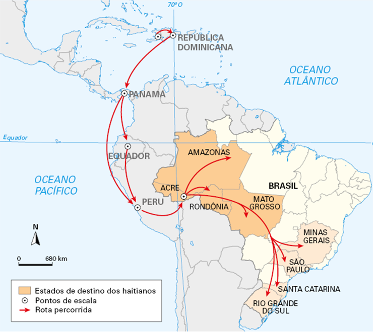Fonte: Folha de S.Paulo. Disponível em: https://www1.folha.uol.com.br/mundo/2014/04/1439034-acre-vai-fechar-abrigo-para-imigrantes.shtml. Acesso em: 5 ago. 2021.
Outro grupo imigrante, que ganhou destaque recentemente, foram os venezuelanos, que começaram a ingressar em território brasileiro a partir de 2016. O principal objetivo era fugir da crise econômica e política que se instaurou na Venezuela, muitas vezes de forma provisória, esperando, do lado de cá da fronteira, que a situação melhorasse. Alguns grupos só vinham comprar itens essenciais, como alimentos e produtos de limpeza, e retornavam ao país de origem.
Venezuela: busca de comida no Brasil – 2016
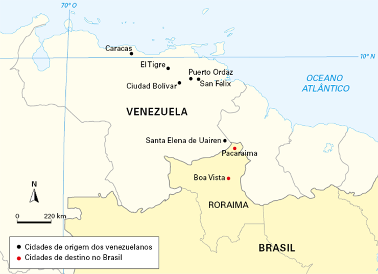Venezuelanos no Brasil. G1. Roraima. Disponível em: http://especiais.g1.globo.com/rr/roraima/2016/venezuelanos-no-brasil/. Acesso em: 5 ago. 2021.
Com a chegada de haitianos e venezuelanos, ocorreram manifestações de preconceito a estes grupos, apesar de a ideia de uma “invasão” de estrangeiros não se justificar, já que o Brasil está entre os países com menor porcentagem de imigrantes estrangeiros em sua população, não chegando a 2%.
A crise econômica que se instalou no Brasil desde 2015 passou a prejudicar a geração de empregos no país e levou à volta do padrão de migrações característico das décadas de 1980 e início da década de 2000, ou seja, desestimulou a imigração e fez crescer novamente a emigração.
Migrações internacionais
Mais de 3% da população mundial vive na atualidade fora de seu país de origem. São cerca de 244 milhões de migrantes internacionais, segundo dados de 2015 da Organização das Nações Unidas (ONU). Mais de 150 milhões, ou seja, por volta de dois terços, vive na Europa ou na Ásia. A América do Norte é a terceira região com mais imigrantes internacionais e apresenta maior saldo migratório positivo, ou seja, maior diferença em números absolutos entre os emigrantes e os imigrantes.
Mundo: migrantes internacionais – 2015
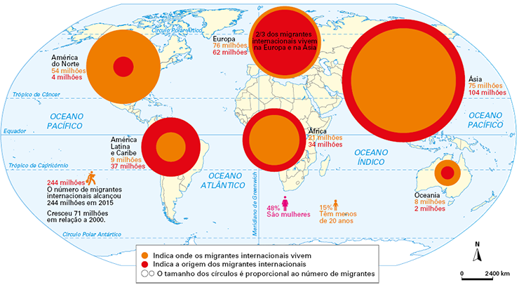Fonte: Folha de S.Paulo. Disponível em: https://www1.folha.uol.com.br/mundo/2014/04/1439034-acre-vai-fechar-abrigo-para-imigrantes.shtml. Acesso em: 5 ago. 2021.
Mas quando analisamos a situação interna dos países para avaliações mais proporcionais, alguns dados chamam a atenção. Por exemplo, mesmo sendo o país com maior número de imigrantes internacionais do mundo, os Estados Unidos estão bem abaixo de países como a Arábia Saudita, a Austrália, a Nova Zelândia e o Canadá no que se refere à participação relativa dos estrangeiros na população total.
Portanto, se, por um lado, os Estados Unidos e a Europa são os maiores centros de atração de imigrantes do mundo, por outro, a participação de estrangeiros em sua população ainda não é tão grande como se poderia imaginar, como mostra o mapa da página seguinte.
Mundo: imigrantes internacionais – 2019

Fonte: Folha de S.Paulo. Disponível em: Imigrantes internacionais como porcentagem da população total, 2015. ONU. Divisão Populacional. Disponível em: https://www.un.org/en/development/desa/population/migration/data/estimates2/estimatesmaps.asp?1t1. Acesso em: 5 ago. 2021.
As migrações internacionais vêm se acentuando desde o final do século passado, graças a três fatores muito importantes: a melhoria dos meios de transporte e comunicação, o fim da Guerra Fria e a intensificação de novas formas de conflitos.
O fim da Guerra Fria contribuiu para o aumento das migrações sobretudo no Leste Europeu e nos países da antiga União Soviética, cujas fronteiras se transformaram, assim como suas economias e regimes políticos, que passaram de ditaduras socialistas a democracias capitalistas.
Com o fim da Guerra Fria novos tipos de conflitos eclodiram, caracterizados como guerras civis, ou seja, disputas entre grupos diferentes no interior de vários países. O agravante dessas disputas é que elas envolvem diferenciação entre grupos étnicos e religiosos, levando a perseguições, ataques à população civil e tentativas de genocídio.
Dessa forma, se a globalização levou ao aumento da possibilidade de migrações, a emergência dos novos conflitos tornou-as deslocamentos forçados.
Segundo a ACNUR (Alto Comissariado das Nações Unidas para os Refugiados) havia, em 2018, 68,5 milhões de pessoas deslocadas de maneira forçada. Desse total, 40 milhões foram deslocamentos internos, ou seja, dentro de seus próprios países, mesmo que não mais nos locais ou regiões de origem. Do restante, 25,4 milhões eram refugiados e 3,1 estavam em busca de reconhecimento dessa situação. Apenas uma parcela dessas pessoas é reconhecida internacionalmente dentro do conceito de refugiado , tido como aquele imigrante que está fugindo de uma si-tuação que ameace sua integridade física e de sua família, normalmente, devido a guerras e perseguições de caráter político, religioso ou étnico. Dos refugiados atualmente reconhecidos, 57% são originários de três paí-ses (Síria, Afeganistão e Sudão do Sul) e 85% estão localizados, já na condição de refugiados, em países em desenvolvimento.
Mundo: principais concentrações de refugiados – 2017
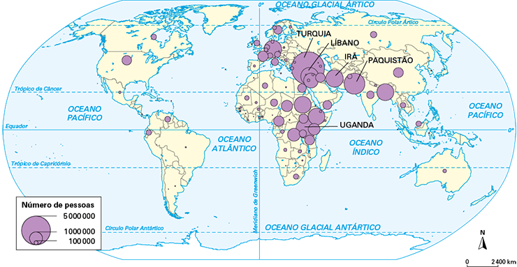Fonte: Relatório de Migrações Forçadas 2017. UNHCR. Disponível em: https://www.unhcr.org/5b27be547#_ga=2.72422995.1959607167.1556650037-773445388.1556650037&_gac=1.116267508.1556650037.Cj0KCQjw5J_mBRDVARIsAGqGLZDiYL1jAABQvz9TjF_-0VjIrCx2v3aVaykjV22OrSAUVLIOl10tod4aAqbPEALw_wcB>. Acesso em: 5 ago. 2021.
A situação dos refugiados costuma ser bastante problemática, envolvendo fragilidade econômica, física e psicológica. A fuga de regiões de conflito e de perseguição em geral inclui a exposição a situações de violência, perda de familiares e abandono da maior parte dos bens. Assim sendo, a proteção a essas pessoas é vista como uma ação básica de garantia dos direitos humanos.
Atualmente houve um aumento no fluxo de imigração de países subdesenvolvidos para países desenvolvidos mais ricos. Nestes, têm aumentado as reações contra a entrada de refugiados e barreiras legais foram criadas através de leis que penalizam de forma mais clara e direta os imigrantes irregulares. Foram criadas também barreiras físicas, como muros e cercas, além da utilização de guardas de fronteira.
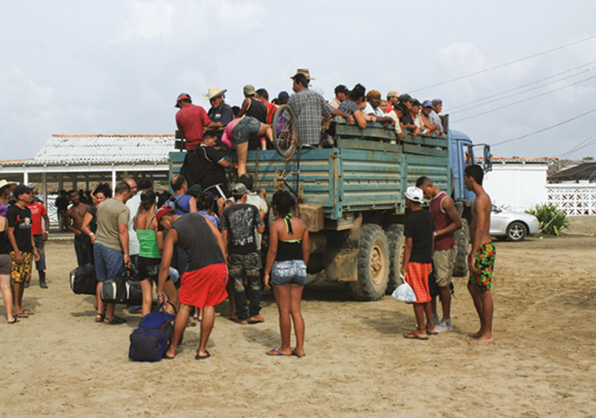Pessoas de origem centro-americana na rota até a fronteira com os Estados Unidos, em Ciudad Hidalgo, no México, em 2018.
Saeschie Wagner/Shutterstock.com
Com a justificativa econômica é comum vermos o crescimento de argumentos culturalistas e religiosos, que defendem a ideia de que os imigrantes tendem a transformar a cultura e a religião dos países para os quais se deslocam, o que não deixa de acontecer. Isso leva ao crescimento de ideologias nacionalistas e racistas, que desembocam na xenofobia, ou seja, na concepção de que o estrangeiro é um perigo que deve ser evitado.
1
Diferencie os termos migração, imigração e emigração.
2
O que são migrações temporárias? Indique e explique um de seus tipos.
3
O que são migrações forçadas? Indique duas de suas causas.
4
Descreva a atual situação das migrações internas no Brasil, destacando sua intensidade e as migrações de retorno.
5
Ao analisar dois períodos diferentes – as duas últimas décadas do século XX e o início do século atual até por volta de 2014 –, é possível perceber claras diferenças no que se refere à situação do Brasil no contexto das migrações internacionais. Considere tais diferenças e compare os dois períodos.
6
Indique e explique duas causas do aumento das migrações internacionais a partir do final do século XX.
7
Indique duas importantes áreas de repulsão e de atração populacional nas migrações internacionais atuais.
1
Uerj 2017
Rompimento da barragem de rejeitos da Mineradora Samarco, no distrito de Bento Rodrigues (Mariana, MG).
noticias.terra.com.br, novembro/2015.
No Brasil, os principais problemas oriundos da mineração podem ser englobados em quatro categorias: poluição da água, poluição do ar, poluição sonora e subsidência, ou seja, afundamento do terreno. Inicialmente, a mineração afeta a cobertura vegetal, em graus variados, desde a supressão total ou parcial na área a ser minerada, até a utilização de grandes volumes de água. A atividade gera profundas alterações, modificando toda a estrutura física e social tanto do local onde está situada a mina quanto da região no entorno.
Disponível em: ge902ferro.wordpress.com (Adapt.).
O desastre ocorrido na cidade de Mariana evidenciou o quanto a mineração de ferro pode causar impactos socioambientais negativos.
Nesse episódio, esses impactos provocaram a seguinte mudança nas condições de vida da localidade mineira:
- ampliação do número de idosos
- aumento da desigualdade salarial
- interrupção definitiva do extrativismo
- deslocamento compulsório da população
2
Unicamp 2017 O estudo Arranjos Populacionais e Concentrações Urbanas do Brasil (IBGE, 2015) identificou 294 arranjos populacionais no País, de diferentes escalas e naturezas. O Arranjo Populacional da Região Metropolitana de São Paulo (SP) é caracterizado pela extensão e intensidade de seus fluxos: aproximadamente 1.750.000 pessoas deslocam-se cotidianamente entre os municípios que compõem o Arranjo para estudar e trabalhar.
Essa dinâmica espacial é melhor explicada pelo conceito de
- migração interna.
- movimento pendular.
- migração urbano-urbano.
- movimento sazonal.
3
Unesp 2016
O entendimento dos processos sociais envolvidos nos fluxos de pessoas entre países, regiões e continentes passa pelo reconhecimento de que sob a rubrica migração internacional estão envolvidos fenômenos distintos, com grupos sociais e implicações diversas. A migração internacional, no contexto da globalização, é inevitável e deve ser entendida como parte das estratégias de sobrevivência, de impulso para alcançar novos horizontes, e a globalização, nesse contexto, age como fator de estímulo.
Neide L. Patarra. “Migrações internacionais: teorias, políticas e movimentos sociais”. Estudos Avançados, 2006. (Adapt.).
Explique por que a globalização é um estímulo à migração internacional. Cite dois aspectos ou “fenômenos distintos” motivadores das migrações.
4
UEL-PR 2017 Analise o mapa, a seguir, da densidade da população brasileira em 2004.
simielli, M. E.Geoatlas básico. 60. Brasil. População. São Paulo: Ática, 2006.
Em tons mais escuros, destacam-se as áreas com altas concentrações de habitantes.
Com base nessas informações, responda aos itens a seguir.
- Como se calcula a densidade da população de uma área?
- Indique três Estados que apresentam, em grande parte de sua área territorial, densidade populacional de menos de 1 hab/km².
5
IFPE 2018 Analise as proposições sobre os tipos de migrações frequentes no cotidiano da sociedade brasileira.
- Migração pendular é aquela em que o trabalhador muda de cidade dentro de uma região metropolitana, principalmente da cidade principal para outra próxima.
- Migração sazonal é aquela em que os migrantes permanecem fora de seu lugar de origem durante determinado período, em geral a trabalho, e depois retornam ao lugar de origem onde ficam à espera de uma nova oportunidade.
- Na migração intrametropolitana, o trabalhador reside em uma cidade de certa região metropolitana e se desloca, diariamente, até a cidade principal ou à cidade vizinha para trabalhar ou estudar.
- Migração cidade-cidade caracteriza-se pelo fluxo de pessoas entre diferentes cidades, em busca de melhores condições de vida.
Assinale a alternativa correta
- Somente as afirmativas I e III são verdadeiras.
- Somente as afirmativas I e II são verdadeiras.
- Somente as afirmativas II e III são verdadeiras.
- Somente as afirmativas I e IV são verdadeiras.
- Somente as afirmativas II e IV são verdadeiras.
6
Fuvest-SP 2016 Observe os mapas.
Dentre as seguintes alternativas, a única que apresenta a principal causa para o correspondente fluxo migratório é:
- I: procura por postos de trabalho formais no setor primário.
- II: necessidade de mão de obra rural, devido ao avanço do cultivo do arroz.
- III: necessidade de mão de obra no cultivo da soja no Ceará e em Pernambuco.
- IV: procura por postos de trabalho no setor aeroespacial.
- V: migração de retorno.
7
Unesp 2016
| Migrações inter-regionais segundo as grandes regiões, 2005-2010. | |||
| Grandes reuniões | Imigrantes | Emigrantes | Saldo Migratório Líquido |
|---|---|---|---|
| Norte | 297 152 | 260 670 | 36 482 |
| Nordeste | 571 335 | 1 272 413 | (–)701 078 |
| Sudeste | 1 163 575 | 838 080 | 325 495 |
| Sul | 345 184 | 268 892 | 76 292 |
| Centro-Oeste | 604 048 | 341 240 | 262 808 |
Leila R. Ervatti et al. Mudança demográfica no Brasil no início do século XXI, 2015. (Adapt.)
A partir da análise da tabela, identifique a principal região de repulsão e a principal região de atração populacional do território brasileiro, explicitando, para cada uma delas, um fator socioeconômico que contribuiu para essa condição.
8
Uerj 2015
Identifique, no conjunto dos três mapas, a macrorregião do país com os maiores fluxos emigratórios e a macrorregião com os maiores fluxos imigratórios. Em seguida, indique um fator de atração e um de repulsão para o fluxo da região Sul para as regiões Norte e Centro-Oeste, observado no mapa 3.
9
UEL-PR 2017 Os movimentos migratórios existentes no Brasil, a partir de 2001, mostram que 41% dos habitantes do país não eram naturais do município de residência e cerca de 16% deles não eram procedentes da Unidade Federativa em que moravam.
Considerando a realidade exposta, assinale a alternativa que apresenta, corretamente, motivos que estimularam fluxos migratórios nesse período.
- A ausência de ciclos econômicos e de investimentos produtivos, públicos ou privados.
- A contínua e crescente desintegração dos espaços urbanos e rurais.
- A migração pendular, que provoca um estado de crise permanente de repulsão da população.
- A saída do campo para a cidade devido às precárias condições de trabalho lá existentes.
- O desenvolvimento dos sistemas de transportes, energia e comunicações.
10
FGV-SP 2019 Nas últimas décadas, as migrações internas no território brasileiro foram marcadas por alterações em sua dinâmica, como resultado das decisões de investimento, da localização da produção e da desconcentração da oferta de emprego, entre outros fatores. As migrações revelam um país mais integrado, urbanizado, mas apresentando, ainda, desigualdades regionais e sociais significativas.
Sobre as internas, entre a década de 1990 e os dias atuais, assinale V para a afirmativa verdadeira e F para a falsa.
Os fluxos migratórios direcionaram-se para as cidades médias, cujos postos de trabalho aumentaram devido às estratégias públicas, como os incentivos fiscais e os investimentos em infraestrutura industrial e de serviços.
Os fluxos migratórios, na escala inter-regional, apresentaram uma tendência à redução e os principais movimentos passaram a ocorrer dentro das próprias regiões – deslocamentos a menores distâncias.
Os fluxos migratórios intrarregionais cresceram de importância, revelando a menor capacidade de atração das metrópoles, que deixaram de exercer a função de polo avançado de desenvolvimento econômico.
- V – V – F.
- V – F – V.
- V – F – F.
- F – V – V.
- F – F – V.
11
Unicamp-SP 2017
| Distribuição da população pelas regiões brasileiras (em porcentagem) | |||||||
| Regiões/Anos | 1950 | 1960 | 1970 | 1980 | 1991 | 2000 | 2010 |
|---|---|---|---|---|---|---|---|
| Norte | 3,0 | 3,8 | 4,9 | 5,8 | 6,4 | 6,9 | 7,4 |
| Norte | 3,9 | 4,1 | 4,4 | 5,6 | 7,0 | 7,6 | 8,3 |
| Norte | 15,1 | 16,8 | 17,7 | 16,0 | 15,1 | 14,8 | 14,4 |
| Norte | 34,6 | 31,6 | 30,3 | 29,2 | 28,8 | 28,1 | 27,8 |
| Norte | 43,4 | 43,7 | 42,7 | 43,4 | 42,7 | 42,6 | 42,1 |
Fonte: Instituto Brasileiro de Geografia e Estatística – IBGE
Os sucessivos Censos Demográficos do IBGE (Instituto Brasileiro de Geografia e Estatística) buscam conhecer a distribuição da população pelo território brasileiro, conhecimento relevante para os mais diversos tipos de planejamento.
Considerando os dados da tabela acima, assinale a alternativa correta.
- As regiões Norte e Centro-Oeste foram as únicas com acréscimos contínuos na participação regional desde 1950, fenômeno associado aos fluxos migratórios nacionais incentivados por políticas governamentais de ocupação do território.
- A região Nordeste foi a única que apresentou redução contínua de participação regional, fenômeno associado às grandes secas do sertão, responsáveis pela migração da população para as outras regiões do país ao longo de todo o século XX.
- A região Sudeste tem maior participação regional na população do país, apresentando redução a partir de 1991, fenômeno associado ao decréscimo, em números absolutos, de sua população pela elevada queda da taxa de fecundidade.
- A região Sul apresentou acréscimo de participação regional até 1991, ocorrendo queda nas décadas seguintes, fenômeno associado ao regresso dos filhos de imigrantes europeus em busca de trabalho nos países de origem de seus pais.
12
UPE 2018
ÓRFÃOS DA CANA
Mecanização da lavoura cria legião de ex-boias-frias
Desempregados no país e com problemas de saúde
Sem vagas de trabalho, migração para SP trava
“Se cana enriquecesse, eu seria milionário. Trabalhei 26 anos direto, cortando 18 toneladas por dia. Tenho dores na coluna e um braço torto. Foi só o que consegui ganhar”, disse Geraldo Melchiades, 52 anos.
Eram milhares. Mas, com o aumento vertiginoso da mecanização das lavouras, foram praticamente expulsos dos canaviais. Uma legião de Geraldos, Raimundos e Josés viu suas vidas tomarem outros rumos por causa das máquinas. Não foram derrotados só pela tecnologia, mas perderam espaço também devido a um acordo, que restringiu a queima da palha da cana, responsável por fumaça, fuligem e gases tóxicos, e obrigou as usinas a se mecanizarem cada vez mais.
Fonte: Jornal Folha de São Paulo, 30/06/2017. Adaptado.
De acordo com os fatos apresentados no texto, é CORRETO afirmar que a modernização da agricultura brasileira
- apresentou resultados socioambientais de diminuição de impactos negativos, como a degradação dos solos e dos recursos hídricos, além da minimização dos problemas causados à saúde humana pelos agrotóxicos.
- aumentou a mecanização do campo brasileiro, resultando na gradual eliminação dos boias-frias do cenário rural, sobretudo nas áreas agrícolas paulistas, gerando um reordenamento no processo migratório socioespacial.
- intensificou o percentual de lavouras não mecanizadas no Centro-Sul, tornando essas áreas espaços atrativos para migrações de milhares de pequenos posseiros, parceiros e arrendatários.
- diminuiu as desigualdades regionais no país, reorientando a ocupação e utilização de terras para produção, tornando a região Nordeste e a Amazônia áreas concentradoras de fluxos migratórios.
- desencadeou o avanço das fronteiras agrícolas na Amazônia, diminuindo o número de grandes propriedades ligadas às empresas multinacionais, resultando em menor expansão de atividades extrativistas.
As questões selecionadas nesta seção são prioritariamente do Enem, mas questões de vestibulares diversos que apresentam características semelhantes aos itens do referido exame também podem ser usadas como recurso para estudo.
1
Enem 2016 O número de filhos por casal diminui rapidamente. Para a maioria dos economistas, isso representa um alerta para o futuro.
Taxa de fecundidade total
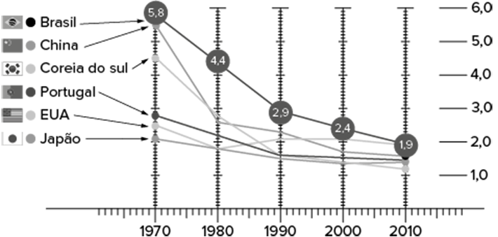Fontes: IBGE e OCDE. Disponível em: http://epoca.globo.com. Acesso em: 20 out. 2015 (adaptado).
Uma consequência socioeconômica para os países que vivenciam o fenômeno demográfico ilustrado é a diminuição da
- oferta de mão de obra nacional.
- média de expectativa de vida.
- disponibilidade de serviços de saúde.
- despesa de natureza previdenciária.
- imigração de trabalhadores qualificados.
2
UFU-MG 2018
A População Economicamente Ativa (PEA) brasileira está ficando mais velha e o número de jovens que ingressam na População em Idade Ativa (PIA) é cada vez menor, segundo dados da Pesquisa Nacional por Amostra de Domicílios (PNAD) do IBGE. Trata-se de movimento natural da economia, mas que trará consequências importantes para empresas.
Disponível em: https://www.Ig.com.br/blog/envelhecimento-da-populacao-economicamente-ativa-impoedesafios-ao-mercado/. Acesso em: 22 de mar, 2017.
Esse cenário tende a proporcionar a médio e a longo prazo
- um menor crescimento da disponibilidade de mão de obra e a diminuição da oferta de profissionais capacitados.
- um achatamento salarial em todas as etapas de produção quando a mão de obra será gradativamente substituída pelas máquinas.
- ma redução nos custos da previdência social, nos gastos com saúde e, principalmente, com a educação.
- uma diminuição nos investimentos para capacitação profissional devido à redução da concorrência entre trabalhadores que procuram emprego.
3
Enem
Fonte: IBGE, Censo Demográfico 1991/2010 BRASIL. IBGE. Censo demográfico 1991-2010. Rio de Janeiro, 2011.
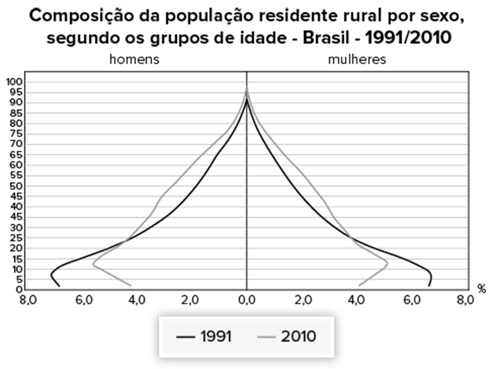Fonte: IBGE, Censo Demográfico 1991/2010 BRASIL. IBGE. Censo demográfico 1991-2010. Rio de Janeiro, 2011.
A interpretação e a correlação das figuras sobre a dinâmica demográfica brasileira demonstram um(a)
- menor proporção de fecundidade na área urbana.
- menor proporção de homens na área rural.
- aumento da proporção de fecundidade na área rural.
- queda da longevidade na área rural.
- queda do número de idosos na área urbana.
TEXTO PARA AS PRÓXIMAS 2 QUESTÕES:
Os gráficos a seguir, extraídos do sítio eletrônico do IBGE, apresentam a distribuição da população brasileira por sexo e faixa etária no ano de 1990 e projeções dessa população para 2010 e 2030.
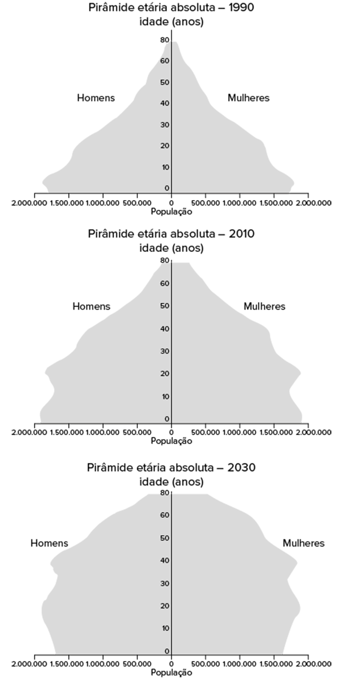4
Enem Se for confirmada a tendência apresentada nos gráficos relativos à pirâmide etária, em 2050,
- a população brasileira com 80 anos de idade será composta por mais homens que mulheres.
- a maioria da população brasileira terá menos de 25 anos de idade.
- a população brasileira do sexo feminino será inferior a 2 milhões.
- a população brasileira com mais de 40 anos de idade será maior que em 2030.
- a população brasileira será inferior à população de 2010.
5
Enem A partir da comparação da pirâmide etária relativa a 1990 com as projeções para 2030 e considerando-se os processos de formação socioeconômica da população brasileira, é correto afirmar que
- a expectativa de vida do brasileiro tende a aumentar na medida em que melhoram as condições de vida da população.
- a população do país tende a diminuir na medida em que a taxa de mortalidade diminui.
- a taxa de mortalidade infantil tende a aumentar na medida em que aumenta o índice de desenvolvimento humano.
- a necessidade de investimentos no setor de saúde tende a diminuir na medida em que aumenta a população idosa.
- o nível de instrução da população tende a diminuir na medida em que diminui a população.
6
Enem PPL 2018
Fonte: IBGE. Disponível em: http://revistaepoca.globo.com. Acesso em: 30 jun. 2015.
A evolução da pirâmide etária apresentada indica a seguinte tendência:
- Crescimento da faixa juvenil.
- Aumento da expectativa de vida.
- Elevação da taxa de fecundidade.
- Predomínio da população masculina.
- Expansão do índice de mortalidade.
7
Enem A distribuição da População Economicamente Ativa (PEA) no Brasil variou muito ao longo do século XX. O gráfico representa a distribuição por setores de atividades (em %) da PEA brasileira em diferentes décadas.
As transformações socioeconômicas ocorridas ao longo do século XX, no Brasil, mudaram a distribuição dos postos de trabalho do setor
- agropecuário para o industrial, em virtude da queda acentuada na produção agrícola.
- industrial para o agropecuário, como consequência do aumento do subemprego nos centros urbanos.
- comercial e de serviços para o industrial, como consequência do desemprego estrutural.
- agropecuário para o industrial e para o de comércio e serviços, por conta da urbanização e do avanço tecnológico.
- comercial e de serviços para o agropecuário, em virtude do crescimento da produção destinada à exportação.
8
Enem 2017 Procuramos demonstrar que o desenvolvimento pode ser visto como um processo de expansão das liberdades reais que as pessoas desfrutam. O enfoque nas liberdades humanas contrasta com visões mais restritas de desenvolvimento, como as que identificam desenvolvimento com crescimento do Produto Nacional Bruto, ou industrialização. O crescimento do PNB pode ser muito importante como um meio de expandir as liberdades. Mas as liberdades dependem também de outros determinantes, como os serviços de educação e saúde e os direitos civis.
SEN, A. Desenvolvimento como liberdade. São Paulo: Cia. das Letras, 2010.
A concepção de desenvolvimento proposta no texto fundamenta-se no vínculo entre
- incremento da indústria e atuação no mercado financeiro.
- criação de programas assistencialistas e controle de preços.
- elevação da renda média e arrecadação de impostos.
- garantia da cidadania e ascensão econômica.
- ajuste de políticas econômicas e incentivos fiscais.
9
Enem PPL 2017 No primeiro semestre do ano de 2009, o Supremo Tribunal Federal (STF), a mais alta corte judicial brasileira, prolatou decisão referente ao polêmico caso envolvendo a demarcação da reserva indígena Raposa Serra do Sol, onde habitam aproximadamente dezenove mil índios aldeados nas tribos Macuxi, Wapixana, Taurepang, Ingarikó e Paramona – em julgamento paradigmático que estabeleceu uma série de conceitos e diretrizes válidas não só para o caso em questão, mas para todas as reservas indígenas demarcadas ou em processo de demarcação no Brasil.
SALLES, D. J. P. C. Disponível em: www.ambito-juridico.com.br. Acesso em: 30 jul. 2013 (Adapt.).
A demarcação de terras indígenas, conforme o texto, evidencia a
- ampliação da população indígena na região.
- função do Direito na organização da sociedade.
- mobilização da sociedade civil pela causa indígena.
- diminuição do preconceito contra os índios no Brasil.
- pressão de organismos internacionais em defesa dos índios brasileiros.
10
Enem 2016
Os moradores de Andalsnes, na Noruega, poderiam se dar ao luxo de morar perto do trabalho nos dias úteis e de se refugiar na calmaria do bosque aos fins de semana. E sem sair da mesma casa. Bastaria achar uma vaga para estacionar o imóvel antes de curtir o novo endereço.
Disponível em: http://casavogue.globo.com. Acesso em: 3 out. 2015 (Adapt.).
Uma vez implementada, essa proposta afetaria a dinâmica do espaço urbano por reduzir a intensidade do seguinte processo:
- Êxodo rural.
- Movimento pendular.
- Migração de retorno.
- Deslocamento sazonal.
- Ocupação de áreas centrais.